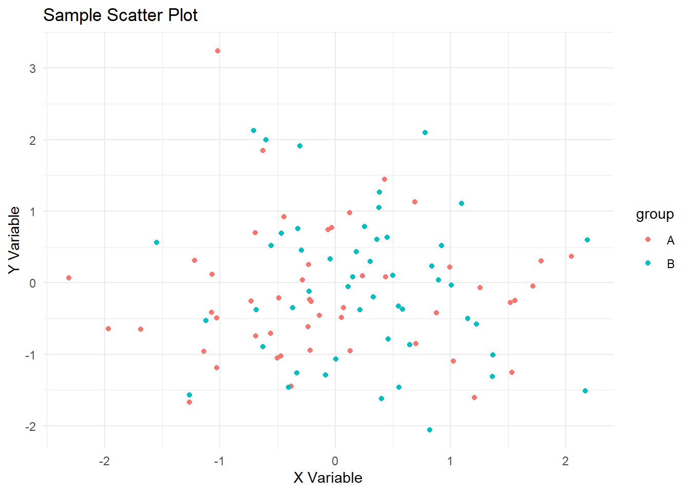

renv::init()Virtual Environments
with renv
gt
tables
How to use renv for reproducible data science in R.
I’ve developed in R for years without using virtual environments. There’s never been a disaster, but I do experience some friction:
- Old projects don’t always run the same way they used to.
- A collaborator uses an updated package and now I need to update too.
- Deployed apps sometimes behave differently than on my local machine.
Should I finally start using renv, or will it just add unnecessary ceremony?
Goal
I’ll decide by addressing these questions:
- What exactly does renv do under the hood?
- How much overhead does it add to a project?
- Do I actually need reproducible environments for the kind of work I do? I.e., when does “just update the package” stop being good enough?
My hypothesis is that as projects become more collaborative, more public, and more long‑lived, the cost of not using renv starts to exceed the cost of learning it.
How renv Works
Create a virtual environment by running init() one time per project.
init():
- creates a project‑local library in folder
renv/, - creates a lockfile,
renv.lock, containing package version and source specifications, and - adds an auto‑activation hook in
.Rprofile, creating the file if it doesn’t already exist.
virtual_environs/
├── .Rprofile
├── index.qmd
├── renv/
│ ├── library
│ └── activate.R
├── renv.lockThis line in .Rprofile activates the local environment whenever I start an R session:
source("renv/activate.R")From here on, package installs go into the project, not my global library. Periodically run snapshot() to update renv.lock with the any changes to package versions.1
renv::snapshot()That’s about it. Be sure to commit renv.lock to version control, but ignore the renv/ folder itself.
Returning to a project
The packages in renv/ are machine-specific, and not commited to Git. If I clone to a new machine, renv/ will not exist. If I pull change from a collaborator, the renv.lock file will be updated but not match renv/. If I install a new version of R, the library path will change.
When I open a project, the auto-activation hook will run and check for consistency: does renv/ contain the right versions of all packages in renv.lock and only those packages? If not, it will print a warning and suggest running restore().
restore() reads the lockfile and installs the exact versions of packages into the local library.
renv::restore()Example
Initialize renv in your project directory:
# One-time setup per project
renv::init()Install packages during development:
# Install packages as you work
install.packages("dplyr")
install.packages("ggplot2")Snapshot your current environment:
# Record exact versions to renv.lock
renv::snapshot()Restore environment on another machine:
# Install packages exactly as in renv.lock
renv::restore()How renv Works
- Creates a
renv/directory with project-specific package installations - Generates
renv.lockwith exact versions, sources, and dependencies - Modifies
.Rprofileto automatically activate the local environment - Provides tools for managing package conflicts and updates
Best Practices for R Projects
- Always commit
renv.lockto version control - Never commit the
renv/library/directory (it’s large and machine-specific) - Run
renv::snapshot()after installing new packages - Use
renv::status()to check for discrepancies between lockfile and current environment
Lockfiles and Reproducibility
Lockfiles are the key to reproducible environments. They record exact versions and sources.
R: renv.lock
Contains: - Package names and versions - Package sources (CRAN, GitHub, local) - Dependency relationships - R version information
Python: requirements.txt vs. Poetry
requirements.txt (basic):
pandas==2.0.3
numpy==1.24.3
matplotlib==3.7.1Poetry lockfile (comprehensive): - Exact versions and hashes - Dependency resolution details - Platform-specific information
Version Control Strategy
- Commit lockfiles to Git
- Never commit virtual environment directories
- Use CI to validate environment restoration
- Tag releases with specific lockfile versions
Hands-on Examples
Let’s create a simple cross-language data analysis project.
Project Structure
virtual_environs_tutorial/
├── tutorial.qmd
├── R/
│ ├── analysis.R
│ └── shiny_app.R
├── python/
│ ├── app.py
│ └── requirements.txt
├── renv.lock
└── .github/
└── workflows/
└── ci.ymlR Analysis Example
Our R script performs basic data exploration and visualization:
Show the code
# Load required packages
library(ggplot2)
# Generate sample data
set.seed(123)
df <- data.frame(
x = rnorm(100),
y = rnorm(100),
group = sample(c("A", "B"), 100, replace = TRUE)
)
# Create a plot
p <- ggplot(df, aes(x = x, y = y, color = group)) +
geom_point() +
labs(title = "Sample Scatter Plot", x = "X Variable", y = "Y Variable") +
theme_minimal()
print(p)
Show the code
# Save the plot
ggsave("R/plot.png", p, width = 6, height = 4)
# Print summary
summary(df) x y group
Min. :-2.30917 Min. :-2.0532 Length :100
1st Qu.:-0.49385 1st Qu.:-0.8011 N.unique : 2
Median : 0.06176 Median :-0.2258 N.blank : 0
Mean : 0.09041 Mean :-0.1075 Min.nchar: 1
3rd Qu.: 0.69182 3rd Qu.: 0.4678 Max.nchar: 1
Max. : 2.18733 Max. : 3.2410 Shiny App for Deployment
For demonstration purposes, we’ve included a simple Shiny app:
Show the code
library(shiny)
library(ggplot2)
ui <- fluidPage(
titlePanel("Virtual Environment Demo"),
sidebarLayout(
sidebarPanel(
sliderInput("n", "Number of points:", 10, 1000, 100),
selectInput("color", "Color:", c("blue", "red", "green"))
),
mainPanel(plotOutput("plot"))
)
)
server <- function(input, output) {
output$plot <- renderPlot({
set.seed(123)
df <- data.frame(x = rnorm(input$n), y = rnorm(input$n))
ggplot(df, aes(x, y)) +
geom_point(color = input$color) +
theme_minimal()
})
}
shinyApp(ui, server)Deployment to Posit Cloud
Posit Cloud provides an excellent platform for deploying R applications with managed environments.
Deploying a Shiny App
- Prepare Your App: Ensure all dependencies are in
renv.lock - Push to GitHub: Commit your code and lockfiles
- Create Posit Cloud Project:
- Go to Posit Cloud
- Create “New Project from Git Repository”
- Enter your repository URL
- Configure Environment: Posit Cloud will automatically restore from
renv.lock - Publish: Use the publish button to make your app publicly accessible
Benefits for Deployment
- Managed Infrastructure: No server maintenance
- Automatic Scaling: Handles traffic spikes
- Environment Consistency: Uses your lockfile for exact reproduction
- Easy Sharing: Share links with collaborators or for presentations
GitHub Actions for CI/CD
GitHub Actions can automate environment setup and testing.
Basic CI Workflow
yaml
Show the code
name: R + Python CI
on: [push, pull_request]
jobs:
test:
runs-on: ubuntu-latest
strategy:
matrix:
r-version: [4.3]
python-version: [3.10]
steps:
- uses: actions/checkout@v4
- name: Setup R
uses: r-lib/actions/setup-r@v2
with:
r-version: ${{ matrix.r-version }}
- name: Setup Python
uses: actions/setup-python@v4
with:
python-version: ${{ matrix.python-version }}
- name: Restore R environment
run: |
R -e 'install.packages("renv")'
R -e 'renv::restore()'
- name: Setup Python environment
run: |
python -m venv .venv
source .venv/bin/activate
pip install -r python/requirements.txt
- name: Run R tests
run: Rscript R/analysis.R
- name: Run Python tests
run: |
source .venv/bin/activate
python python/app.pyCI Benefits
- Automated Testing: Ensures code works in clean environments
- Environment Validation: Confirms lockfiles are correct
- Cross-platform Testing: Test on multiple R/Python versions
- Deployment Triggers: Automatically deploy on successful tests
Presentation Tips for R Meetup
Structure Your Talk
- Start with Problems: Show real-world dependency conflicts
- Explain Concepts: Use simple analogies (apartments vs. houses)
- Live Demo: Initialize renv, snapshot, restore on “fresh” machine
- Show Cross-language: Demonstrate reticulate integration
- Deployment Demo: Deploy Shiny app to Posit Cloud
- Q&A: Prepare for common questions
Key Takeaways for Audience
- Virtual environments are essential for reproducible data science
- renv makes R environment management straightforward
- Python’s venv + requirements.txt is the minimum viable approach
- Lockfiles are your insurance policy for deployment
- Start small: use renv on your next R project
Common Questions
- “Isn’t this overkill for small projects?” No, the overhead is minimal and prevents future headaches
- “What about conda?” Great for complex scientific stacks, but renv/venv are simpler for most R/Python work
- “How do I handle system dependencies?” Virtual environments handle packages, but system libraries (like GDAL) need separate management
Further Resources
Conclusion
Virtual environments transform data science workflows from fragile, machine-dependent processes to robust, reproducible systems. By isolating dependencies and capturing exact versions in lockfiles, you ensure that your analyses will work consistently across different environments and over time. Whether you’re an R user dipping into Python or maintaining complex multi-language projects, mastering virtual environments will make you a more effective and confident data scientist.
The examples in this tutorial provide a solid foundation—start by applying renv to your next R project, and you’ll quickly see the benefits in practice.
Footnotes
You can also run
renv::status()to see if the current library is out of sync with the lockfile.↩︎